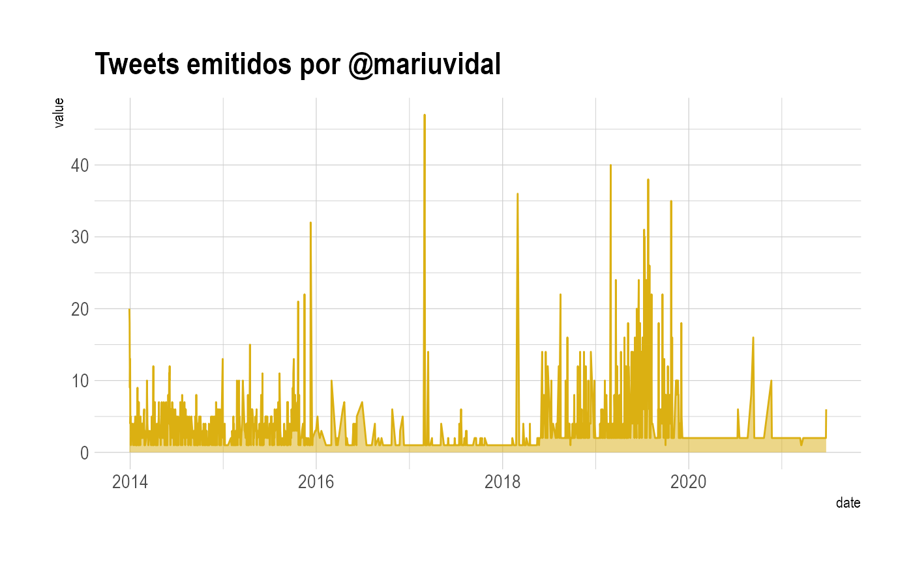

Presentation Politicxs en Twitter
Presentation.RmdInstalación:
- Instalamos el paquete y otras librerias necesarias:
library(devtools)
#> Loading required package: usethis
install_github("guadag12/politicxsentwitteR", force=T)
#> Downloading GitHub repo guadag12/politicxsentwitteR@HEAD
#>
#>
checking for file ‘/private/var/folders/j7/f4jdfp6j1kx0_v4wthmrnvsr0000gq/T/RtmpO1meXz/remotes5f387db19711/guadag12-politicxsentwitteR-9cbc170/DESCRIPTION’ ...
✓ checking for file ‘/private/var/folders/j7/f4jdfp6j1kx0_v4wthmrnvsr0000gq/T/RtmpO1meXz/remotes5f387db19711/guadag12-politicxsentwitteR-9cbc170/DESCRIPTION’
#>
─ preparing ‘politicxsentwitteR’:
#>
checking DESCRIPTION meta-information ...
✓ checking DESCRIPTION meta-information
#>
─ checking for LF line-endings in source and make files and shell scripts
#>
─ checking for empty or unneeded directories
#>
NB: this package now depends on R (>= 3.5.0)
#>
WARNING: Added dependency on R >= 3.5.0 because serialized objects in serialize/load version 3 cannot be read in older versions of R. File(s) containing such objects: ‘politicxsentwitteR/data/politicxs_data.rda’
#> ─ building ‘politicxsentwitteR_0.0.0.9000.tar.gz’
#>
#>
#> Installing package into '/private/var/folders/j7/f4jdfp6j1kx0_v4wthmrnvsr0000gq/T/Rtmp5nCuVp/temp_libpath40cc1777c0c1'
#> (as 'lib' is unspecified)
library(politicxsentwitteR)Descargá la data de politicxs:
- Lista de usuarios que contiene Politicxs en twitter
Podemos ver la lista que tenemos de funcionarios con politicxs_data:
head(politicxs_data)
#> # A tibble: 6 x 9
#> user_id screen_name category description name gender followers_count
#> <chr> <chr> <chr> <chr> <chr> <chr> <dbl>
#> 1 1204088… A_Carambia deputies "Diputado Naci… Antoni… M 183
#> 2 8417571… Adriana_Rua… deputies "Vecina de Deá… Adrian… F 1206
#> 3 1277698… AgenciaAfi national… "Cuenta oficia… Agenci… ND 2508
#> 4 1661771… Agricultura… national… "Cuenta oficia… Minist… ND 162332
#> 5 1752732… AgustinLaje others "Escritor. Lic… Agustí… M 457882
#> 6 39276894 AidaAyala deputies "Diputada Naci… Aída A… F 8360
#> # … with 2 more variables: profile_image_url <chr>, country <chr>Timeline de usuarios:
- Podemos descargar sobre un usuario determinado con la función get_timeline_data
timeline_mev <- get_timeline_data("mariuvidal")
#>
Found 1000 records...
Found 1020 records...
Imported 1020 records. Simplifying into dataframe...
#>
Found 1000 records...
Found 2000 records...
Found 3000 records...
Found 4000 records...
Found 4255 records...
Imported 4255 records. Simplifying into dataframe...
head(timeline_mev)
#> user_id status_id created_at screen_name
#> 1 109040582 1003997372450422784 2018-06-05 13:50:01 mariuvidal
#> 2 109040582 1004020719234310145 2018-06-05 15:22:47 mariuvidal
#> 3 109040582 1003997372450419968 2018-06-05 13:50:01 mariuvidal
#> 4 109040582 1004020723726323712 2018-06-05 15:22:48 mariuvidal
#> 5 109040582 1000000957688811520 2018-05-25 13:09:42 mariuvidal
#> 6 109040582 1006636448513129984 2018-06-12 20:36:46 mariuvidal
#> text
#> 1 EN VIVO: ANUNCIO DE MEDIDAS PARA ACOMPAÑAR A LAS PYMES https://t.co/l86a4NoQZB
#> 2 Las líneas de crédito que lanzamos, con tasas entre el 20 y el 25% y con plazos más largos, tienen que ver con la compra de materia prima, insumos, maquinarias, pero también con capital del trabajo que muchas veces hace falta.
#> 3 EN VIVO: ANUNCIO DE MEDIDAS PARA ACOMPAÑAR A LAS PYMES https://t.co/l86a4NoQZB
#> 4 Es importante que en este momento de la Argentina todos hagamos nuestra parte: el Gobierno acompañando a las pequeñas y medianas empresas, escuchando sus demandas y dándoles respuestas, y las Pymes cuidando el empleo y apostando al crecimiento.
#> 5 🇦🇷¡Feliz Día de la Patria! Que este #25DeMayo nos encuentre unidos para seguir construyendo una Argentina mejor. 🇦🇷
#> 6 En esta nueva unidad penitenciaria, van a tener que aceptar ciertas condiciones, terminar la escuela, aprender a convivir sin violencia y los vamos a acompañar para recuperarse de las adicciones en caso de que sea necesario.
#> source is_quote is_retweet favorite_count retweet_count lang
#> 1 Twitter Web Client FALSE FALSE 2068 834 es
#> 2 Twitter Web Client FALSE FALSE 241 93 es
#> 3 Twitter Web Client FALSE FALSE 2062 829 es
#> 4 Twitter Web Client FALSE FALSE 677 209 es
#> 5 Twitter for iPhone FALSE FALSE 9067 2062 es
#> 6 Twitter for iPhone FALSE FALSE 700 181 es
#> status_url name
#> 1 https://twitter.com/mariuvidal/status/1003997372450422784 María Eugenia Vidal
#> 2 https://twitter.com/mariuvidal/status/1004020719234310145 María Eugenia Vidal
#> 3 https://twitter.com/mariuvidal/status/1003997372450422784 María Eugenia Vidal
#> 4 https://twitter.com/mariuvidal/status/1004020723726323712 María Eugenia Vidal
#> 5 https://twitter.com/mariuvidal/status/1000000957688811520 María Eugenia Vidal
#> 6 https://twitter.com/mariuvidal/status/1006636448513130497 María Eugenia Vidal
#> urls_url urls_t_co reply_to_status_id
#> 1 pscp.tv/w/1mnxeXgNBpLJX https://t.co/l86a4NoQZB <NA>
#> 2 <NA> <NA> 1004020717715951616
#> 3 pscp.tv/w/1mnxeXgNBpLJX https://t.co/l86a4NoQZB <NA>
#> 4 <NA> <NA> 1004020722266705920
#> 5 <NA> <NA> <NA>
#> 6 <NA> <NA> 1006636336068079616
#> reply_to_user_id reply_to_screen_name mentions_user_id mentions_screen_name
#> 1 <NA> <NA> <NA> <NA>
#> 2 109040582 mariuvidal <NA> <NA>
#> 3 <NA> <NA> <NA> <NA>
#> 4 109040582 mariuvidal <NA> <NA>
#> 5 <NA> <NA> <NA> <NA>
#> 6 109040582 mariuvidal <NA> <NA>
#> retweet_status_id retweet_text retweet_created_at retweet_source
#> 1 <NA> <NA> <NA> <NA>
#> 2 <NA> <NA> <NA> <NA>
#> 3 <NA> <NA> <NA> <NA>
#> 4 <NA> <NA> <NA> <NA>
#> 5 <NA> <NA> <NA> <NA>
#> 6 <NA> <NA> <NA> <NA>
#> retweet_favorite_count retweet_retweet_count retweet_user_id
#> 1 <NA> <NA> <NA>
#> 2 <NA> <NA> <NA>
#> 3 <NA> <NA> <NA>
#> 4 <NA> <NA> <NA>
#> 5 <NA> <NA> <NA>
#> 6 <NA> <NA> <NA>
#> retweet_screen_name retweet_name retweet_followers_count
#> 1 <NA> <NA> <NA>
#> 2 <NA> <NA> <NA>
#> 3 <NA> <NA> <NA>
#> 4 <NA> <NA> <NA>
#> 5 <NA> <NA> <NA>
#> 6 <NA> <NA> <NA>
#> retweet_friends_count retweet_statuses_count retweet_location
#> 1 <NA> <NA> <NA>
#> 2 <NA> <NA> <NA>
#> 3 <NA> <NA> <NA>
#> 4 <NA> <NA> <NA>
#> 5 <NA> <NA> <NA>
#> 6 <NA> <NA> <NA>
#> retweet_description retweet_verified
#> 1 <NA> <NA>
#> 2 <NA> <NA>
#> 3 <NA> <NA>
#> 4 <NA> <NA>
#> 5 <NA> <NA>
#> 6 <NA> <NA>- E incluso saber cuándo fue que más twitteó:
library(tidyverse)
#> ── Attaching packages ─────────────────────────────────────── tidyverse 1.3.0 ──
#> ✓ ggplot2 3.3.3 ✓ purrr 0.3.4
#> ✓ tibble 3.1.2 ✓ dplyr 1.0.7
#> ✓ tidyr 1.1.2 ✓ stringr 1.4.0
#> ✓ readr 1.4.0 ✓ forcats 0.5.0
#> ── Conflicts ────────────────────────────────────────── tidyverse_conflicts() ──
#> x dplyr::filter() masks stats::filter()
#> x dplyr::lag() masks stats::lag()
library(plotly)
#>
#> Attaching package: 'plotly'
#> The following object is masked from 'package:ggplot2':
#>
#> last_plot
#> The following object is masked from 'package:stats':
#>
#> filter
#> The following object is masked from 'package:graphics':
#>
#> layout
library(hrbrthemes)
#> NOTE: Either Arial Narrow or Roboto Condensed fonts are required to use these themes.
#> Please use hrbrthemes::import_roboto_condensed() to install Roboto Condensed and
#> if Arial Narrow is not on your system, please see https://bit.ly/arialnarrow
timeline_mev %>%
group_by(date=as.Date(created_at)) %>%
summarise(value = n()) %>%
ggplot( aes(x=date, y=value)) +
geom_area(fill="#dbb012", alpha=0.5) +
geom_line(color="#dbb012") +
ggtitle("Tweets emitidos por @mariuvidal") +
theme_ipsum() c. Podemos hacerlo comparando la cantidad de tweets de más de un usuario:
timeline_af_mm <- get_timeline_data(screen.name = c("alferdez", "mauriciomacri"))
#>
Found 1000 records...
Found 1020 records...
Imported 1020 records. Simplifying into dataframe...
#>
Found 1000 records...
Found 2000 records...
Found 3000 records...
Found 4000 records...
Found 4491 records...
Imported 4491 records. Simplifying into dataframe...
#>
Found 1000 records...
Found 2000 records...
Found 3000 records...
Found 4000 records...
Found 4810 records...
Imported 4810 records. Simplifying into dataframe...
head(timeline_af_mm)
#> user_id status_id created_at screen_name
#> 1 149991703 1132797204488433664 2019-05-26 23:54:34 alferdez
#> 2 149991703 1133118888990924800 2019-05-27 21:12:50 alferdez
#> 3 149991703 1133890787618512896 2019-05-30 00:20:05 alferdez
#> 4 149991703 1137880822546124802 2019-06-10 00:35:03 alferdez
#> 5 149991703 1138143400518176768 2019-06-10 17:58:27 alferdez
#> 6 149991703 1141773523117137921 2019-06-20 18:23:15 alferdez
#> text
#> 1 “Quisiera que Macri empiece a explicar su modo de corrupción. Ha permitido que todos sus ministros se lleven la plata al exterior mientras los argentinos hacen el esfuerzo” @alferdez https://t.co/sahcW3Gb1y
#> 2 https://t.co/wIfMNOFXUI
#> 3 @ZamoraJulio @CFKArgentina @Kicillofok @magariovero Gracias Julio, un placer recibirte, juntos vamos a sacar el país adelante.
#> 4 Felicitaciones @bordet por tu merecidisimo triunfo. \n\nEl pueblo de Entre Ríos renovó su esperanza. Vamos Argentina.
#> 5 Las Abuelas son lo mejor que tenemos. \n\nBienvenido nieto 130.
#> 6 ¡Feliz Día de la Bandera! https://t.co/8b04UV9uEG
#> source is_quote is_retweet favorite_count retweet_count lang
#> 1 Twitter for iPhone FALSE TRUE 0 1482 es
#> 2 Twitter for iPhone FALSE FALSE 2261 472 und
#> 3 Twitter for iPhone FALSE FALSE 310 77 es
#> 4 Twitter Web Client FALSE FALSE 5996 1371 es
#> 5 Twitter Web Client FALSE FALSE 23312 4702 es
#> 6 Twitter Web App FALSE FALSE 2525 519 es
#> status_url name
#> 1 https://twitter.com/alferdez/status/1132797204488433664 Alberto Fernández
#> 2 https://twitter.com/alferdez/status/1133118888990924800 Alberto Fernández
#> 3 https://twitter.com/alferdez/status/1133890787618512896 Alberto Fernández
#> 4 https://twitter.com/alferdez/status/1137880822546124802 Alberto Fernández
#> 5 https://twitter.com/alferdez/status/1138143400518176768 Alberto Fernández
#> 6 https://twitter.com/alferdez/status/1141773523117137921 Alberto Fernández
#> mentions_user_id
#> 1 748334828978839553
#> 2 <NA>
#> 3 c("161047617", "138814032", "2953955753", "1584076484")
#> 4 134232117
#> 5 <NA>
#> 6 <NA>
#> mentions_screen_name
#> 1 alferdezprensa
#> 2 <NA>
#> 3 c("ZamoraJulio", "CFKArgentina", "Kicillofok", "magariovero")
#> 4 bordet
#> 5 <NA>
#> 6 <NA>
#> retweet_status_id
#> 1 1132787189383876614
#> 2 <NA>
#> 3 <NA>
#> 4 <NA>
#> 5 <NA>
#> 6 <NA>
#> retweet_text
#> 1 “Quisiera que Macri empiece a explicar su modo de corrupción. Ha permitido que todos sus ministros se lleven la plata al exterior mientras los argentinos hacen el esfuerzo” @alferdez https://t.co/sahcW3Gb1y
#> 2 <NA>
#> 3 <NA>
#> 4 <NA>
#> 5 <NA>
#> 6 <NA>
#> retweet_created_at retweet_source retweet_favorite_count
#> 1 2019-05-26 23:14:46 Twitter for iPhone 3207
#> 2 <NA> <NA> <NA>
#> 3 <NA> <NA> <NA>
#> 4 <NA> <NA> <NA>
#> 5 <NA> <NA> <NA>
#> 6 <NA> <NA> <NA>
#> retweet_retweet_count retweet_user_id retweet_screen_name
#> 1 1482 748334828978839553 alferdezprensa
#> 2 <NA> <NA> <NA>
#> 3 <NA> <NA> <NA>
#> 4 <NA> <NA> <NA>
#> 5 <NA> <NA> <NA>
#> 6 <NA> <NA> <NA>
#> retweet_name retweet_followers_count retweet_friends_count
#> 1 Alberto Fernández Prensa 322485 1
#> 2 <NA> <NA> <NA>
#> 3 <NA> <NA> <NA>
#> 4 <NA> <NA> <NA>
#> 5 <NA> <NA> <NA>
#> 6 <NA> <NA> <NA>
#> retweet_statuses_count retweet_location
#> 1 9659 Ciudad Autónoma de Buenos Aires, Argentina
#> 2 <NA> <NA>
#> 3 <NA> <NA>
#> 4 <NA> <NA>
#> 5 <NA> <NA>
#> 6 <NA> <NA>
#> retweet_description
#> 1 Cuenta oficial de prensa y difusión de @alferdez. Contacto: prensa@alferdez.com.ar
#> 2 <NA>
#> 3 <NA>
#> 4 <NA>
#> 5 <NA>
#> 6 <NA>
#> retweet_verified reply_to_status_id reply_to_user_id reply_to_screen_name
#> 1 TRUE <NA> <NA> <NA>
#> 2 <NA> 1133118874646454272 149991703 alferdez
#> 3 <NA> 1133855984076697601 161047617 ZamoraJulio
#> 4 <NA> <NA> <NA> <NA>
#> 5 <NA> <NA> <NA> <NA>
#> 6 <NA> 1141773509972103170 149991703 alferdez
#> urls_url urls_t_co
#> 1 <NA> <NA>
#> 2 <NA> <NA>
#> 3 <NA> <NA>
#> 4 <NA> <NA>
#> 5 <NA> <NA>
#> 6 <NA> <NA>- Además, podemos graficar en qué periodos de tiempos más twittearon ambos:
timeline_af_mm %>%
group_by(date=as.Date(created_at), screen_name) %>%
summarise(value = n()) %>%
ggplot( aes(x=date, y=value)) +
geom_area(aes(fill = screen_name), alpha=0.5) +
geom_line(aes(color = screen_name)) +
ggtitle("Tweets emitidos por @mauriciomacri y @alferdez") +
theme_ipsum()
#> `summarise()` has grouped output by 'date'. You can override using the `.groups` argument.
Friends & Followers:
4.a. Podemos ver cuántos amigos tiene cada uno con la función get_friends_followers:
foll_friends_mv_hl <- get_friends_followers(screen.name = c( "mariuvidal", "horaciorlarreta"))
#>
Found 1000 records...
Found 1020 records...
Imported 1020 records. Simplifying into dataframe...
#>
Found 120 records...
Imported 120 records. Simplifying into dataframe...
#>
Found 125 records...
Imported 125 records. Simplifying into dataframe...
head(foll_friends_mv_hl)
#> screen_name date followers_count friends_count listed_count
#> 1 mariuvidal 2020-12-25 1623740 558 1947
#> 2 mariuvidal 2021-02-11 1623073 556 1956
#> 3 mariuvidal 2021-02-12 1622995 556 1956
#> 4 mariuvidal 2021-02-13 1622959 557 1956
#> 5 mariuvidal 2021-02-14 1622901 557 1955
#> 6 mariuvidal 2021-02-15 1622823 557 1955
#> statuses_count favourites_count
#> 1 7516 487
#> 2 7516 487
#> 3 7516 487
#> 4 7516 487
#> 5 7516 487
#> 6 7517 487- E incluso podemos graficarlo:
library(sknifedatar)
# foll_friends_mv_hl %>% gather(key = "tipo_interaccion", value = "value", c("friends_count", "followers_count")) %>%
# group_by(tipo_interaccion) %>%
# tidyr::nest() %>%
# mutate(
# .plot = purrr::map(data, ~ ggplot(.x, aes(x = Sepal.Length, y = Petal.Length)) + geom_point()),
# .table = purrr::map(data, ~ summary(.x) %>% knitr::kable())
# ) %>%
# ungroup()
# followers_plot <- foll_friends_mv_hl %>%
# ggplot( aes(x=as.Date(date), y=as.numeric(friends_count))) +
# geom_line(aes(color=screen_name)) +
# ggtitle("Followers obtenidos por @alferdez y @mauriciomacri") +
# xlab("Fecha") +
# ylab("Cantidad Followers") +
# theme_ipsum()
# friends_plot <- foll_friends_mv_hl %>%
# ggplot( aes(x=as.Date(date), y=as.numeric(friends_count))) +
# geom_line(aes(color=screen_name)) +
# ggtitle("Followers obtenidos por @alferdez y @mauriciomacri") +
# xlab("Fecha") +
# ylab("Cantidad Followers") +
# theme_ipsum()
Redes
5.a. Podemos obtener la data de redes (para un periodo de tiempo y que se actualiza de manera mensual):
others_network <- get_network_data(category = "others")
#>
Found 1000 records...
Found 1020 records...
Imported 1020 records. Simplifying into dataframe...
#>
Found 1000 records...
Found 2000 records...
Found 3000 records...
Found 4000 records...
Found 5000 records...
Found 6000 records...
Found 7000 records...
Found 8000 records...
Found 9000 records...
Found 10000 records...
Found 11000 records...
Found 12000 records...
Found 13000 records...
Found 14000 records...
Found 15000 records...
Found 16000 records...
Found 17000 records...
Found 18000 records...
Found 19000 records...
Found 20000 records...
Found 21000 records...
Found 22000 records...
Found 23000 records...
Found 24000 records...
Found 25000 records...
Found 26000 records...
Found 27000 records...
Found 28000 records...
Found 29000 records...
Found 30000 records...
Found 31000 records...
Found 32000 records...
Found 33000 records...
Found 34000 records...
Found 35000 records...
Found 36000 records...
Found 37000 records...
Found 38000 records...
Found 39000 records...
Found 40000 records...
Found 41000 records...
Found 42000 records...
Found 43000 records...
Found 44000 records...
Found 45000 records...
Found 46000 records...
Found 47000 records...
Found 48000 records...
Found 49000 records...
Found 50000 records...
Found 51000 records...
Found 52000 records...
Found 53000 records...
Found 54000 records...
Found 55000 records...
Found 56000 records...
Found 57000 records...
Found 58000 records...
Found 59000 records...
Found 60000 records...
Found 61000 records...
Found 62000 records...
Found 63000 records...
Found 64000 records...
Found 65000 records...
Found 66000 records...
Found 67000 records...
Found 68000 records...
Found 69000 records...
Found 70000 records...
Found 71000 records...
Found 72000 records...
Found 73000 records...
Found 74000 records...
Found 75000 records...
Found 76000 records...
Found 77000 records...
Found 78000 records...
Found 79000 records...
Found 80000 records...
Found 81000 records...
Found 82000 records...
Found 83000 records...
Found 84000 records...
Found 85000 records...
Found 85865 records...
Imported 85865 records. Simplifying into dataframe...5.b. También podemos hacer una nube con la info obtenida:
library(igraph)
#>
#> Attaching package: 'igraph'
#> The following object is masked from 'package:plotly':
#>
#> groups
#> The following objects are masked from 'package:dplyr':
#>
#> as_data_frame, groups, union
#> The following objects are masked from 'package:purrr':
#>
#> compose, simplify
#> The following object is masked from 'package:tidyr':
#>
#> crossing
#> The following object is masked from 'package:tibble':
#>
#> as_data_frame
#> The following objects are masked from 'package:stats':
#>
#> decompose, spectrum
#> The following object is masked from 'package:base':
#>
#> union
library(networkD3)
others_network <- others_network %>%
left_join(politicxs_data) %>%
select(screen_name_from = screen_name, retweet_user_id, value) %>%
left_join(politicxs_data, by = c("retweet_user_id"= "user_id")) %>%
select(from=screen_name_from, to = screen_name, value) %>%
drop_na()
#> Joining, by = "user_id"
p <- simpleNetwork(others_network, height="100px", width="100px")
p